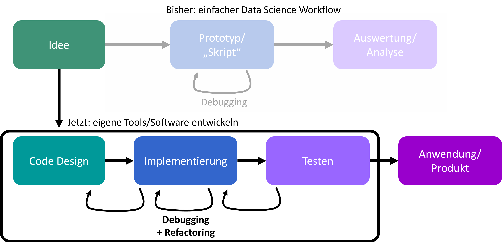

13.1. Der erweiterte Entwicklungsprozess
Bisher (z.B. bei einfacheren Data Science Workflows) konnten wir oft mit recht reduzierten Code-Entwicklungsabläufen arbeiten. Im Prinzip haben wir dabei oft nur iterativ ein Skript (oder Jupyter Notebook) erstellt und solange verändert/verbessert bis es die gewünschten Ergebnisse liefert.
Für umfangreichere Projekte, oder aber auch die Entwicklung eigener Tools oder Software, reicht das in der Regel aber nicht mehr aus!

2.1. Idee
Jeder Entwicklungsprozess beginnt mit einer Idee oder einem Problem. Es ist wichtig, diese Idee klar zu definieren und zu verstehen, welche Herausforderungen sie mit sich bringt.
+ Recherche
Bevor man mit der Programmierung beginnt, sollte man sich einen Überblick über bestehende Lösungen, Datenquellen und Tools verschaffen.
+ Prototyping
Hier wird eine erste, oft rudimentäre Lösung entwickelt, um die Machbarkeit zu testen.
2.2. Code Design
Ein oft übersehener Schritt, aber entscheidend für den Erfolg des Projekts. Hier wird der Code geplant, Strukturen werden erstellt und mögliche Herausforderungen antizipiert.
2.3. Implementierung
Der eigentliche Programmierprozess. Hier wird der zuvor geplante Code umgesetzt.
2.4. Testen
Nach der Implementierung muss der Code gründlich getestet werden. Dies stellt sicher, dass er wie erwartet funktioniert und frei von Fehlern ist.
2.5. Auswertung und Analyse
Nach dem Testen wird der Code analysiert. Funktioniert alles wie erwartet? Gibt es noch Optimierungsmöglichkeiten?
2.6. Anwendung und Produktion
Sobald der Code vollständig getestet und analysiert wurde, kann er in die Produktion übernommen werden.
Das ist keinesfalls ein zwingender Entwicklungsablauf, sondern soll nur eine erste Idee vermitteln, dass der Prozess insgesamt deutlich komplexer ist als ein Jupyter Notebook “zusammenzubasteln”.
13.2. Environments & Cookiecutter-Templates
13.2.1. 1. Environments
Was ist ein Environment?
Ein Environment ist eine isolierte Umgebung, in der du bestimmte Pakete und Bibliotheken installieren kannst, ohne dass sie andere Projekte beeinflussen. Dies ist besonders wichtig, um sicherzustellen, dass Projekte konsistent reproduzierbar sind.
13.2.1.1. Conda und mini-conda
Conda: Ein weit verbreitetes Paket- und Environment-Management-Tool, das in der Data Science-Community häufig verwendet wird. Es unterstützt nicht nur Python, sondern auch andere Programmiersprachen.
Mini-Conda: Eine kleinere, leichtgewichtige Version von Conda, die nur das Nötigste installiert. Perfekt, wenn du Platz sparen möchtest oder volle Kontrolle über die Pakete brauchst, die installiert werden.
13.2.1.2. Erstellung eines Environments
Um ein Environment mit Conda zu erstellen, kannst du die environment.yaml-Datei verwenden. Hier ist ein Beispiel:
name: dummy_project
channels:
- conda-forge
dependencies:
- python=3.12
- ruff
- black
name: Der Name deines Environments (in diesem Beispiel: dummy_projectv).
channels: Gibt die Quellen an, aus denen die Pakete installiert werden (hier: conda-forge).
dependencies: Liste der zu installierenden Pakete (z.B. Python in Version 3.12 und das Tool ruff für den Code-Stil).
Erstellen des Environments mit der environment.yaml:
Die Yaml-Datei environments.yaml dient uns als ein Rezept zum erstellen passender Conda-Environments. Mit diesem Rezept können wir über conda das entsprechende Environment generieren über den Befehl:
conda env create -f environment.yaml
Anschließend müssen wir nur noch in das Environment wechseln mit conda activate dummy_project und können nun darin arbeiten. Dort haben wir Python 3.12 vorliegen, was wir schnell mit python --version überprüfen können. Wir müssten auch die beiden genannten Bibliotheken ruff und black vorfinden wenn wir pip list oder conda list ausführen.
13.2.2. 2. Nächster Schritt: Erstellung eines Repositories mit Cookiecutter
Cookiecutter ist ein Werkzeug, das die Erstellung von Projektvorlagen automatisiert. Wir verwenden ein minimal Template, das ein einfaches Python-Projekt erstellt. Dafür nutzen wir das minimal-python-template auf GitHub.
13.2.2.1. Installation von Cookiecutter
13.2.2.2. Erstellen eines neuen Repositories
Mit dem folgenden Befehl erzeugst du ein neues Python-Projekt, das auf meinem Cookiecutter-Template basiert:
cookiecutter https://github.com/florian-huber/minimal-python-template.git
13.2.2.3. Ergebnis
Das obige Kommando generiert ein Projektverzeichnis mit folgender Struktur:
my-python-project/
├── .github
│ └── workflows
│ └── basic_ci.yml
├── .gitignore
├── CODE_OF_CONDUCT.md
├── LICENSE
├── my_python_package
│ ├── __init__.py
│ ├── my_module.py
│ └── __version__.py
├── pyproject.toml
├── README.md
└── tests
├── __init__.py
└── test_my_module.py
.github/workflows/basic_ci.yml: Konfiguriert eine simple CI/CD Pipeline.
my_python_package/: Hier wird dein Python-Code gespeichert.
tests/: Enthält Unit-Tests für dein Projekt.
13.2.3. 3. Weiterführende Schritte
Nachdem das Projekt erstellt wurde, kannst du es in ein Git-Repository einbinden:
git init
git add .
git commit -m "Initial commit"
Füge das Projekt zu GitHub hinzu:
git remote add origin <URL-deines-Remote-Repositories>
git push -u origin main
Damit hast du ein neues Python-Projekt, das von Grund auf richtig eingerichtet ist und direkt mit Versionierung und CI/CD arbeiten kann.